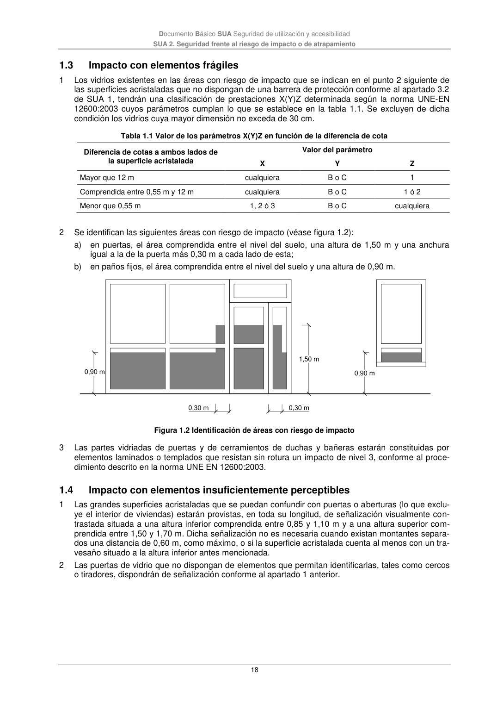
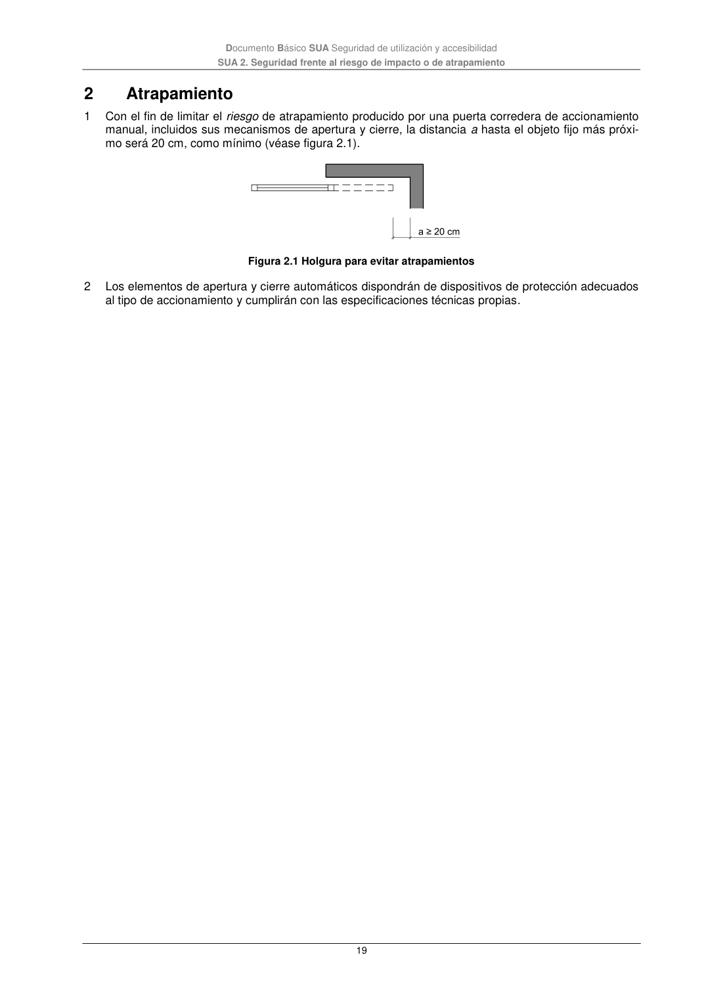

DB-SUA Seguridad de utilización y accesibilidad · edición 2022-06-14 · capa oficial
Documento DB-SUA-oficial · SHA-256 del PDF 3cfb5bbb135e8f02faebd8b844e03e8947994c18d4c9e675a7d2aa37d1cd5958
Copia fiel del PDF fuente · Fuente oficial
Ficha de la disposición en la fuente oficial
Formatos: JSON del segmento · Markdown
Impacto con elementos insuficientemente perceptibles 1 Las grandes superficies acristaladas que se puedan confundir con puertas o aberturas (lo que exclu- ye el interior de viviendas) estarán provistas, en toda su longitud, de señalización visualmente con- trastada situada a una altura inferior comprendida entre 0,85 y 1,10 m y a una altura superior com- prendida entre 1,50 y 1,70 m. Dicha señalización no es necesaria cuando existan montantes separa- dos una distancia de0,60 m, como máximo, o si la superficie acristalada cuenta al menos con un tra- vesaño situado a la altura inferior antes mencionada. 2 Las puertas de vidrio que no dispongan de elementos que permitan identificarlas, tales como cercos o tiradores, dispondrán de señalización conforme al apartado 1 anterior. Documento Básico SUA Seguridad de utilización y accesibilidad SUA 2. Seguridad frente al riesgo de impacto o de atrapamiento 19 2

